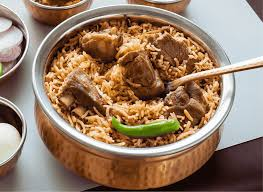

Mutton Biryani Recipe
Steps to Cook Mutton Biryani

Wash and soak basmati rice for 30 minutes.
Clean and marinate mutton with curd, ginger-garlic paste, chili powder, turmeric, and salt for at least 1 hour.
Heat oil/ghee in a heavy-bottomed vessel and sauté whole spices (bay leaf, cinnamon, cloves, cardamom).
Add sliced onions and fry until golden brown.
Add tomatoes, green chilies, and the marinated mutton. Cook until the meat changes color.
Add biryani masala, coriander powder, and mix well.
Pour water and pressure cook or simmer until the mutton is tender.
In another pan, cook the soaked rice till 70% done.
Layer rice and mutton masala alternately, sprinkle with fried onions, mint, and coriander leaves.
Seal the vessel with a lid (dum method) and cook on low flame for 20–25 minutes.
Gently fluff up and serve hot with raita or boiled egg.